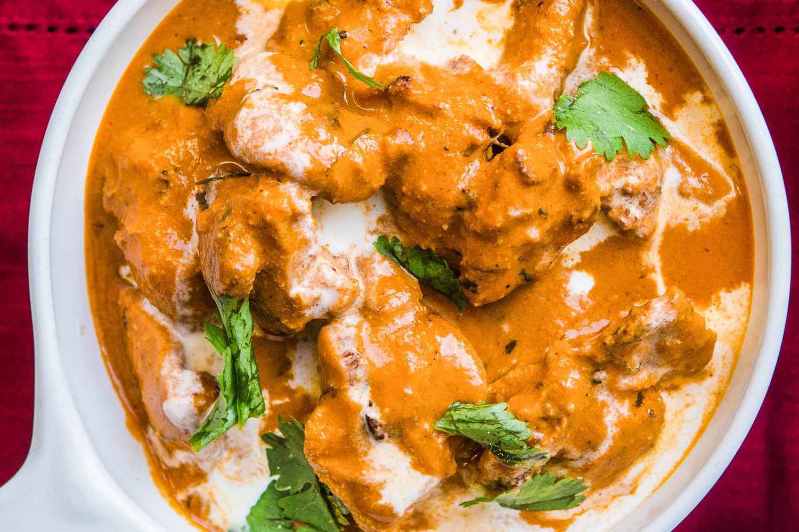

Lasagna

Description
Butter Chicken, also referred to as Murgh Makhani, is a traditional Indian dish
originating from Northern India in 1948.
This recipe consists of seasoned chicken that is cooked in a smooth and
silky curry sauce that’s enhanced with butter and heavy cream.
Ingredients
- Boneless Skinless Chicken Breast: you could also use things.
- Plain Yogurt
- Spices: ginger, garlic, cumin, turmeric, chilli powder, black pepper, garam masala.
- Butter:
- Onion
- Diced Tomatoes
- Cashews: to thicken the sauce.
- Heavy Cream
- Sugar
Steps
- Combine the sour cream (or plain greek yogurt), garlic, ginger, garam marsala, turmeric, cumin,
chili powder and salt in a bowl and whisk to combine. Stir in the bite sized pieces of chicken
and cover, allowing to marinate.
- Heat olive oil in a large pan and cook chicken in batches, until browned on all sides.
-
Once you’ve cooked your chicken pieces in the pan, put them aside on a plate and keep warm.
Now you’ll cook the sauce in the same pan, making sure to scrap any browned bits off the bottom for
maximum flavor!
- Add butter to the pan and toss in sliced onion. Cook until tender about 7 minutes.
- Toss in the garlic, ginger, cumin and garam marsala and cook until fragrant,
then add in the tomatoes, chili powder, cayenne pepper (depending on how spicy you like it),
salt and cashews.
- Bring mixture to a simmer and cook until it’s a deep red color and very fragrant.
- In order to get an ultra creamy and rich sauce you’ll add the sauce ingredients (including the cashews)
to your blender and processing until smooth.
- Once you’ve added your blended sauce back to the pan, stir in the heavy cream gradually until
the mixture comes together and is silky smooth. Add the chicken back to the pan and cook until
the chicken is cooked through.
- Once you’ve simmered your chicken and sauce together, stir in a few tablespoons of butter to add a
delicious richness to the sauce.
Back to Home